DALE CARNEGIE · HOW TO WIN FRIENDS · PART TWO · CHAPTER 1 · PDF p68–79
Do This and You'll Be Welcome Anywhere
Stop trying to make people interested in you. Become interested in them, for real, and they will want you around.
Part Two of the book is about being liked, and Carnegie opens it with a dog. His childhood dog Tippy never read a word of psychology, yet won everyone over simply by being delighted to see them. People, by contrast, spend their lives trying to impress each other, which fails because everyone is mostly interested in themselves. The chapter then piles up proof from very different lives: a famous magician who told himself he loved his audience, a President who knew the White House kitchen maid by name, a salesman saved by a soda-fountain clerk, a banker who got his facts by bringing stamps for a little boy, and a coal seller who finally won a customer by asking for help instead of pitching. It ends with a hospital nurse and a lonely ten-year-old on Thanksgiving, to show that real interest has to help the other person too, not just you.
Principle 1 of Part Two
Become genuinely interested in other people.
How the chapter fits together
pdf p67–68 · read this first
Where it sits. pdf p67 is the title page of Part Two, "Six Ways to Make People Like You", and this is its first chapter. Part One gave three fundamentals for handling people (don't criticize, give honest appreciation, arouse an eager want). Part Two narrows the question to one thing: how do you make people like you? It gives six principles, one per chapter:
Become genuinely interested in other people (this chapter).
Remember that a person's name is, to that person, the sweetest sound in any language (Ch.6).
Be a good listener; encourage others to talk about themselves (Ch.7).
Talk in terms of the other person's interests (Ch.8).
Make the other person feel important, and do it sincerely (Ch.9, which also has the Part Two summary list).
This first one is the root of the other five. Smiling, names, listening and talking about their interests are all ways of showing interest; if the interest is fake, the other five turn into tricks. After Part Two, Part Three moves from being liked to winning people to your way of thinking.
The argument as a chain. Each row builds on the one before.
Modela dog (Tippy)→pure interest, no ulterior motive
Problemwe try to get people interested in us→they are interested in themselves("I": 3,900 times in 500 calls)
CostNapoleon, alone at the endAdler: the uninterested cause the most harm
Proofmagazine editorThurstonUncle GeorgeTheodore RooseveltSykes and the soda clerk
Even the busyfamous authors come to Brooklyna boy's letter to the Kaiser
Howeffort (Spanish, birthdays)a warm "hello"ask about themfind what they care about
Pays offa loyal bank customerWalters's stampsKnaphle's 1 h 47 min→we like those who like us
Limitmust be sincere→two-way street (the nurse)→Principle 1
About the title: "Do this and you'll be welcome anywhere" is a teaser; the "this" is the principle at the end of the chapter. Like Tippy at the garden gate, a person who is truly glad to see you is welcome everywhere.
01 · THE OPENING IMAGE
Tippy: the greatest winner of friends never read a book on it
pdf p68–69
The provocation. Carnegie asks why anyone would read a book about winning friends when they could just study the world's best friend-maker, whom you may meet on the street tomorrow. It is a dog. Come within a few metres and its tail starts going; stop to pat it and it nearly leaps out of its skin with joy. And there is nothing behind the show: it is not trying to sell you a flat or marry you.
A small joke with a point. Every other farm animal has to earn its keep: the hen lays eggs, the cow gives milk, the canary sings. The dog, Carnegie says, is the only one that makes its living purely by giving affection.
Carnegie aged 5a pup bought for fifty cents5 years together
Tippy. When Carnegie was five, his father paid fifty cents for a small yellow-haired puppy. Every afternoon around half past four the dog sat in the front yard staring at the path, and the moment he heard the boy's voice or saw him swinging his lunch pail through the bushes, he raced up the hill barking with joy. For five years he was Carnegie's constant companion. Then one night he was killed by lightning a few feet from where the boy was, and Carnegie calls it the tragedy of his childhood.
The claim the whole chapter defends. Talking directly to the dog, Carnegie says Tippy knew by instinct what most people never learn, and then repeats it so the reader cannot miss it:
The two-months rule (pdf p68–69)
You make more friends in two months by being interested in others than in two years of trying to get them interested in you.
He notes that we all know people who go through life doing the opposite: waving their arms (his word is "wigwag", old slang for signalling with flags) to get others to notice them. It does not work, and the next plate explains why.
Picture it
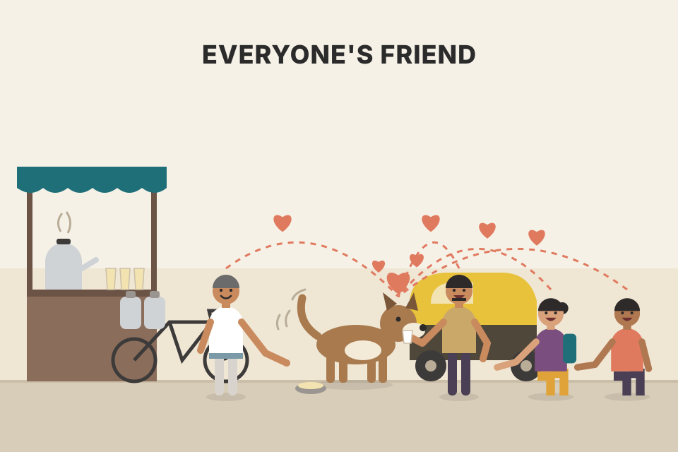
The street dog outside a Chennai tea stall that every regular feeds. It runs to meet the milkman, the auto drivers and the college students alike, tail going, never once asking what anyone can do for it. Nobody calls it charming or clever, yet it has more friends on that street than anyone.
Where it breaks: a dog's affection costs it nothing and asks for no understanding of you. People need you to be interested in them (their work, their worries), which takes attention and memory a dog never has to spend.
What's happening behind it
The book's explanation: the dog wins because its interest points entirely outward and has no ulterior motive. We feel liked, and we like back. Trying to impress points attention inward, toward yourself, and competes with the other person's own wish to be noticed.
Beyond the book: psychologists call liking people who show they like you reciprocal liking, one of the most reliable findings in the research on attraction. Being visibly glad to see someone is one of the clearest signals of liking there is.
At work
The new engineer who spends the first month trying to prove they are the smartest person in the room (long answers in every meeting, "actually…" in every PR) is the wigwagger. The one who spends that month asking teammates how the system came to be, what they are proud of, and what keeps breaking, is Tippy. After two months the second one has allies; the first one has a reputation.
Interview angle. The "Do you have any questions for us?" slot is Tippy's test. A rehearsed question about "company culture" is wigwag. A real question about the interviewer's own work ("You mentioned migrating off the monolith. What's been the hardest part for your team?") shows interest, and interviewers remember the candidates who made them talk.
The deep desire to feel important, which a dog's welcome feeds: Part One, Ch.2.
02 · WHY IMPRESSING FAILS
"I, I, I": people are interested in themselves, morning, noon and after dinner
pdf p69
The blunt fact. People are not interested in you, and not in Carnegie either. They are interested in themselves, all day long. That is why trying to win attention for yourself fails: you are competing with the one subject everybody prefers.
The telephone study. The New York Telephone Company once analysed calls to find the most frequently used word. It was "I": 3,900 times in 500 conversations, nearly eight per call.
The group photo test. When you look at a group photograph that you are in, whose face do you search for first? (Everyone knows the answer.)
The conclusion. If we only try to impress people and make them interested in us, we will never have many real, sincere friends. Friends are not made that way.
Napoleon, the extreme case. Napoleon spent his life making the world notice him. At his last meeting with Josephine he told her that, fortunate as he had been, she was the only person left he could rely on; and Carnegie adds that historians doubt he could rely even on her.
"You are the only person in the world on whom I can rely."Napoleon to Josephine, as quoted by Carnegie (pdf p69)
Alfred Adler's warning. The Viennese psychologist, in his book What Life Should Mean to You, wrote (in our paraphrase) that the person who takes no interest in other people has the hardest time in life and does the most harm to others, and that this is where all human failures come from. Carnegie thinks it is one of the most important sentences in all of psychology, and prints it a second time in italics so you will not skim past it.
Try it: the "I" counter
Paste something you wrote recently: your LinkedIn "About", a self-introduction, a long Slack message, or the cover note of a job application. The counter compares how often you talk about yourself with how often you talk about the reader.
I / me / my
0
you / we
0
Start typing or paste text to see the count. For reference, the 1930s phone callers averaged almost 8 "I"s per call.
Picture it
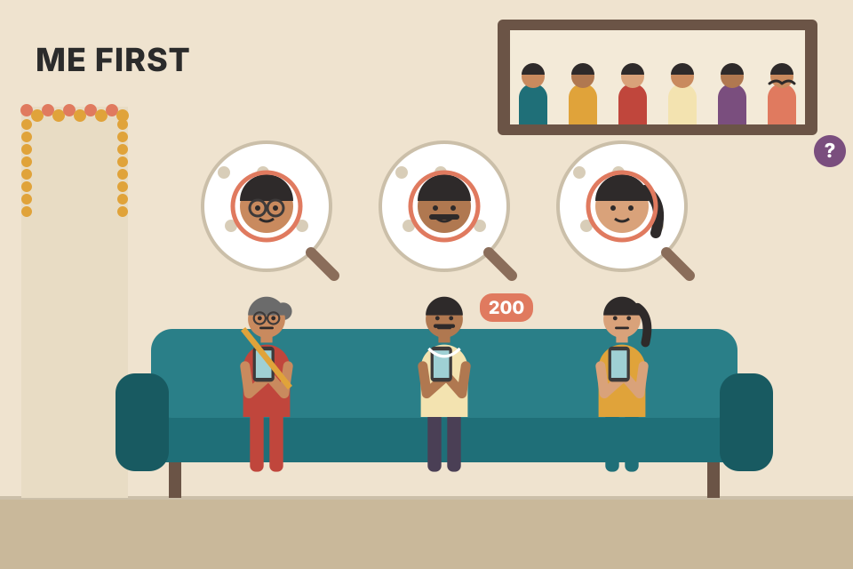
A family WhatsApp group after a wedding: two hundred photos land, and every person scrolls through them hunting for the ones they appear in, zooming in to check their own face. Nobody is checking how the bride's uncle looks.
Where it breaks: people do care about their family; self-interest is not the same as selfishness. The photo shows where attention goes first, not that people care about no one else.
What's happening behind it
The book's explanation: each of us is the main character of our own life, so our attention defaults to ourselves. Anyone who tries to pull that attention toward themselves is swimming against the current; anyone who adds attention to us is swimming with it.
Beyond the book: Diana Tamir and Jason Mitchell (Harvard, 2012) found that talking about yourself activates the brain's reward regions, and people in their study even gave up small amounts of money to answer questions about themselves rather than about others. Separately, James Pennebaker's research on word use suggests heavy use of "I" goes with self-focus (and, in conversations, often with the lower-status person). The phone-company count itself is the book's; we could not check the original study.
At work
Read your last design doc's introduction or your last project update. "I built", "I decided", "I think" in every line reads as a campaign for credit. "This lets your team…", "you asked for…", "for the on-call engineer this means…" reads as service to the reader. Same facts; the second gets read.
Interview angle. "Tell me about yourself" needs "I"; it is about you. But a strong answer ties each point to the listener: "…which is why the payments migration your team is doing caught my eye." One sentence of interest in them changes the whole tone.
A magazine editor who could tell in a few paragraphs, and a magician who loved his audience
pdf p70–71
The editor. Carnegie once took a short-story writing course at New York University, where the editor of a leading magazine spoke to the class. Dozens of manuscripts crossed his desk every day, and he said a few paragraphs were enough to tell whether the writer liked people. If the author did not like people, readers would not like the stories. This hard-nosed editor twice stopped to apologise for sounding like a preacher, but insisted: to write good fiction you have to be interested in people. Carnegie's inference: if that holds for stories on paper, it holds even more for dealing with people face to face.
Howard Thurston"dean of magicians"40 years touring60 million paying viewers~$2 million profit
The magician. Carnegie spent an evening in Howard Thurston's dressing room during his last Broadway run. Thurston had travelled the world for forty years, more than 60 million people had bought tickets, and he had made almost two million dollars.
Not schooling, not secret knowledge. Thurston had run away from home as a small boy, lived as a hobo riding freight cars and sleeping in haystacks, begged for food, and learned to read by spelling out railway signs from the boxcar door. Nor did he know more magic than others: hundreds of books on sleight of hand existed and plenty of people knew as much as he did.
His two edges.
1. Showmanship
He could project his personality across the footlights. He understood human nature, and every gesture, tone of voice and raised eyebrow was rehearsed and timed to a split second.
2. Genuine interest in people
Many magicians, he said, looked at the audience as a crowd of fools to be tricked. Thurston went on stage grateful: these people let him earn a good living, so they deserved his very best.
Before every show he repeated one sentence to himself, over and over:
"I love my audience. I love my audience."Howard Thurston, as told to Carnegie (pdf p71)
Carnegie admits this may sound ridiculous, and says he passes it on without comment: it is simply the recipe of one of the most famous magicians who ever lived.
Picture it
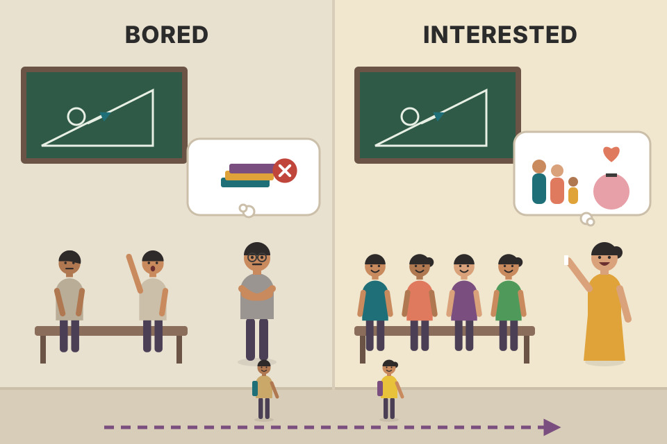
Two tuition teachers in the same Kota lane, equally good at physics. One walks in thinking "another batch of kids who won't do the homework". The other thinks "these families are paying from their savings; let's make it worth it." Within a month, students are switching batches, and it is not because of the syllabus.
Where it breaks: attitude does not replace skill. Thurston also had decades of rehearsed showmanship; the teacher still has to know physics. Interest is the multiplier, not the whole sum.
What's happening behind it
The book's explanation: an attitude toward people leaks into everything you make and do. The editor could feel it on the page; Thurston's audiences presumably felt it from the stage. Contempt shows; so does gratitude.
Beyond the book: Thurston's "I love my audience" is an early form of what performers and speakers now call pre-performance reframing. Research on public speaking anxiety (for example Alison Wood Brooks's 2014 work on reappraising nerves as excitement) suggests that what you tell yourself just before you go on stage changes how you come across.
At work
Users can feel the editor's test in software too. An API whose error messages say "invalid request" was written by someone who saw callers as a nuisance; one that says which field was wrong and how to fix it was written by someone who thought about the person at 2 a.m. reading the log. Before a demo, a tech talk or a client call, try Thurston's line in your own form: "these people gave me an hour; I'm going to make it useful to them."
Gratitude toward the people you serve, the opposite of condemning them: Part One, Ch.1.
04 · A SECOND LIFE
Uncle George, the Fiddle Scraper: a retired man who made friends by being curious
pdf p71
George DykeNorth Warren, Pennsylvania30 years at his service stationaged 72 when Carnegie's team heard him
The situation. After thirty years running a petrol station, Dyke was forced to retire when a new highway was built right over the site. Idle retirement soon bored him, so he started trying to play his old fiddle.
What he did. He began travelling around the region to hear music and talk to skilled fiddlers. In a modest, friendly way he became interested in the background and interests of every musician he met. He was never a great player himself.
What happened. He made a great many friends, went to competitions, and became known to country-music fans across the eastern United States as "Uncle George, the Fiddle Scraper from Kinzua County". At seventy-two he was enjoying every minute.
The point: a sustained interest in other people built him a whole new life at an age when most people assume their useful years are over. It is also a useful counterweight to the famous names in this chapter: you do not need talent or status for the principle to work. Dyke was a mediocre fiddler with no fame at all.
Picture it
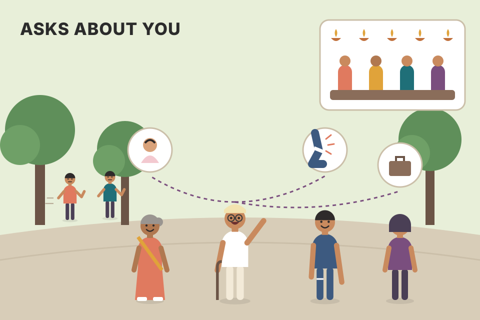
A retired railway clerk in Pune joins the morning walkers' group in the park. He is not the fittest, but he asks everyone about their grandchildren, their old jobs, their knees. Within a year he is the one who organises the Diwali get-together, and people phone him when they have not seen him for two days.
Where it breaks: Dyke also had a shared passion (fiddle music) that gave him a reason to keep showing up. Interest without any common ground or repeated contact is harder to turn into friendship.
What's happening behind it
From the story: curiosity about others made Dyke welcome among people far more skilled than he was. They did not need him as a player; they enjoyed him as a listener and a fan.
Beyond the book: long-running studies of adult life, such as the Harvard Study of Adult Development, find that the quality of people's relationships predicts health and happiness in later life better than wealth or fame. Dyke is a one-man illustration.
At work
You do not need to be the best engineer in a community to be valued in it. The person who reads other people's RFCs, asks good questions in the platform channel and remembers who is working on what becomes the hub of the network. This is also how you join a new domain (say, moving from backend into ML): be the curious newcomer who asks practitioners how they work, not the one pretending to already know.
05 · EVEN HIS SERVANTS LOVED HIM
Theodore Roosevelt: the bobwhite phone call and the corn bread in the White House kitchen
pdf p71–72
Carnegie calls interest in others one of the secrets of Theodore Roosevelt's huge popularity, and his proof is not the voters but the people who worked for him.
The valet's story. Roosevelt's valet, James E. Amos, wrote a book about him called Theodore Roosevelt, Hero to His Valet. Amos and his wife lived in a small cottage on Roosevelt's estate at Oyster Bay. Mrs Amos once asked the President what a bobwhite (a small quail) looked like, as she had never seen one, and he described it in detail. Some time later their phone rang: it was Roosevelt himself, calling to say a bobwhite was sitting outside her window right now, if she wanted to look. Whenever he passed their cottage, even if he could not see them, he would call out a friendly hello to Annie or James by name.
The White House visit. After he had left office, Roosevelt came by the White House one day while President Taft and his wife were away. He greeted all the old staff by name, down to the scullery maids. Seeing Alice, the kitchen maid, he asked whether she still baked corn bread. She said she made it now and then for the staff, but nobody upstairs ate it. Roosevelt declared loudly that they had poor taste and he would tell the President so. Alice brought him a slice, and he walked over to the offices eating it and greeting the gardeners and labourers as he went, speaking to each just as he always had. (The account is by Archie Butt, a military aide.)
The result. Ike Hoover, head usher at the White House for forty years, said with tears in his eyes that it was the only happy day the staff had had in nearly two years, and that none of them would swap it for a hundred-dollar bill.
Carnegie's question: how could the people around a man like that keep from liking him? Notice what he did: none of it was grand. A phone call about a bird, a name shouted across a lawn, a question about corn bread. The power was in noticing people others treated as invisible.
Picture it
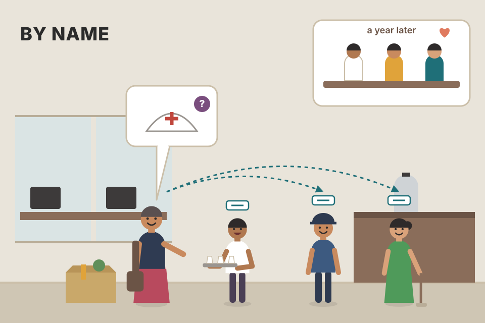
A senior partner at a Gurugram firm who, on her last day before transferring, walks the floor and says goodbye to the housekeeping staff, the security guard and the pantry boy by name, and asks the pantry boy whether his sister got into nursing college as he had hoped. The pantry still talks about it a year later.
Where it breaks: in a strongly hierarchical office, sudden attention from a senior person can feel awkward, even suspicious, if it only appears on special days. Roosevelt's greeting worked because it was how he had always addressed them.
What's happening behind it
The book's explanation: Roosevelt had an honest liking for people with no power to help him. Remembering a small detail (a bird, a recipe) told each person "I noticed you as a person, not a role". Being seen by someone important lifts a person's sense of their own importance, the need Part One kept returning to.
Later in the book: in Part Two, Ch.5 Carnegie adds that whenever Roosevelt expected a visitor, he sat up the night before reading about the subject that visitor cared about. Interest can be both sincere and worked at.
At work
Who are your White House servants? The contractor QA tester, the support agent who escalates bugs, the facilities person who fixed the meeting-room screen, the intern from another team. Know their names. Remember the one thing they told you ("How did the GATE exam go?"). When their work saves you, say so to them and to their manager.
Interview angle. "How do you build relationships across teams?" A concrete answer beats a philosophy: "I make a point of knowing the support engineers who triage our tickets; when one of them mentioned a recurring customer pain, it became our next quarter's top fix."
Making others feel important, sincerely: Part Two, Ch.6.
06 · THE "UNIMPORTANT" PEOPLE
Edward Sykes and the soda clerk who saved his account
pdf p72–73
Roosevelt's habit of noticing people without power is not just charming; this story shows it can be the thing that decides a deal.
Edward M. Sykes, Jr.Chatham, New Jerseysales rep for Johnson & Johnsona drugstore in Hingham, Massachusetts
His habit. Years earlier, Sykes covered Massachusetts for Johnson & Johnson. One of his accounts was a small drugstore in Hingham. Every visit, before going to the owner for the order, he chatted for a few minutes with the young man at the soda fountain and the sales clerk.
The blow. One day the owner told him to leave: he was done buying J&J products, because he felt the company was favouring food stores and discount stores at the expense of small drugstores like his.
The second attempt. Sykes drove around town for several hours, crestfallen, then decided to go back and at least explain his company's position. Walking in, he said hello to the soda clerk and the sales clerk as usual.
The surprise. The owner smiled, welcomed him back, and gave him double his usual order. Asked what had changed in a few hours, the owner pointed at the soda-fountain boy. After Sykes left, the boy had told him that Sykes was one of the very few salespeople who even bothered to greet him and the other staff, and that if any salesman deserved the store's business, it was him. The owner agreed, and stayed a loyal customer.
Sykes's own lesson: genuine interest in other people is the most important quality a salesperson can have, and, he adds, any person at all.
Step through the story
Dated detail. A drugstore soda fountain (a counter selling sodas and ice cream inside a pharmacy) was a fixture of mid-century American towns. Today's equivalent is the receptionist, the office manager or the executive assistant you meet on the way to the decision-maker.
Picture it
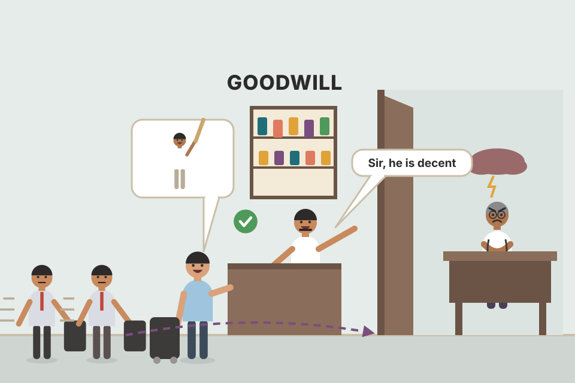
A medical rep in Lucknow visits a busy clinic every week. Most reps push past the compounder and the receptionist to get to the doctor. One always asks the compounder about his son's cricket trials. The day the doctor is in a foul mood about the rep's company, it is the compounder who says, "Sir, this one is decent; he actually talks to us."
Where it breaks: Sykes did not greet the clerk as an investment, and it only paid off because he had done it for years. Start chatting up the receptionist the week you need a favour and it reads as exactly what it is.
What's happening behind it
From the story: people with little formal power still have voices, and they use them for those who treated them as people. Sykes's repeated small kindness built a reputation he did not know he had, and it spoke for him when he was not in the room.
Beyond the book: sociologists call these everyday contacts weak ties, and network research going back to Mark Granovetter (1973) shows they matter far more than people expect, for jobs, information and reputation. Organisations also run on informal influence that no org chart shows.
At work
The engineering manager decides who gets promoted, but the calibration meeting hears from the people you worked with: the SRE you were polite to during an incident, the designer whose feedback you took seriously, the junior you helped on a Friday evening. Same in client work: the client's junior developer who reviews your API docs often has more say over renewal than you think. Be the vendor who learns their name.
Interview angle. Interviews start in the lobby. Recruiters and coordinators are often asked "how was the candidate with you?" Treat everyone in the loop, including the coordinator who rescheduled you twice, the way Sykes treated the soda clerk.
Connects to
Roosevelt and the White House staff: the previous plate.
Making every person feel important, including the "unimportant": Part Two, Ch.6.
07 · REACHING THE UNREACHABLE
How Carnegie got famous, busy people to come and talk to his students
pdf p73
Carnegie says that even the most sought-after people will give you their attention, time and cooperation if you are genuinely interested in them, and offers his own experience as proof.
Brooklyn Institute of Arts and Sciencesfiction-writing course~150 student signatures per letter
The goal. Years before, he ran a fiction-writing course in Brooklyn and wanted well-known, very busy authors (Kathleen Norris, Fannie Hurst, Ida Tarbell, Albert Payson Terhune and Rupert Hughes) to travel there and share their experience.
The letter. The class wrote to each one saying they admired the author's work and very much wanted their advice and the secrets of their success. About 150 students signed every letter. The letter admitted that the author was surely too busy to prepare a lecture, so it enclosed a list of questions about the author and how they worked, to answer instead.
The result. The authors liked it (Carnegie: who wouldn't?) and left home to come to Brooklyn and help.
And again. With the same method he got public figures to address his public-speaking classes, including Leslie M. Shaw (Treasury Secretary under Theodore Roosevelt), George W. Wickersham (Attorney General under Taft), the politician William Jennings Bryan, Franklin D. Roosevelt and many others.
Why the letter worked, broken into its parts (our breakdown):
Admiration
It opened with sincere appreciation of the author's work.
Their story, not ours
The questions were about the author's life and methods, the subject everyone enjoys most (plate 2).
Respect for their time
It said up front that they were too busy for a lecture, and made saying yes easy.
Proof of interest
150 signatures showed the interest was real and wide, not one person's whim.
Rewrite it
Each message asks a busy person for their time. Decide how you would rewrite it, then reveal a Brooklyn-letter version and what changed.
Dated wording. The book speaks of persuading "many other prominent men", though its own list of authors includes three women (Norris, Hurst, Tarbell). Read it as prominent people.
Picture it
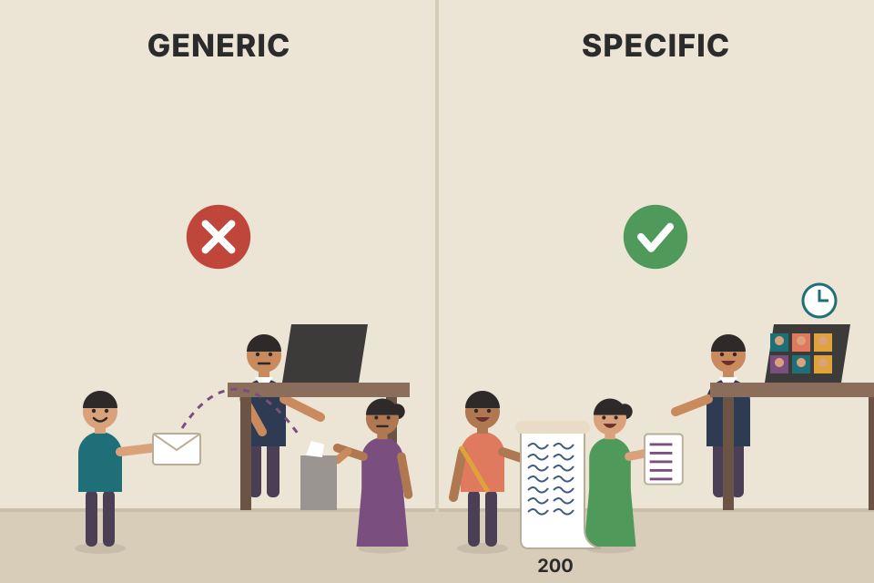
A college fest committee in Kolkata wants a famous alumnus, now a startup founder, to speak. "Please come give a talk at our fest" gets a polite no from his assistant. A note signed by 200 current students saying which of his interviews they loved, plus five questions about how he chose his first co-founder, gets a "Can we do 30 minutes on video?" the same week.
Where it breaks: the method opens a door; it does not guarantee a yes. Busy people still have limits, and the admiration must be specific and true, or it reads as a mail merge.
What's happening behind it
The book's explanation: everyone likes being admired and asked about themselves, even, or especially, people who are famous. The request flipped from "give us your time" to "tell us about you", which is a gift to the person asked.
Beyond the book: this is close to what is now called advice-seeking. Studies by Alison Wood Brooks, Francesca Gino and Maurice Schweitzer (2015) found that people who ask for advice are seen as more competent, not less, because being asked flatters the adviser's judgement.
At work
Need a staff engineer from another org to review your design? "Can you review my doc?" competes with fifty other asks. "Your post-mortem on the cache stampede changed how I think about TTLs. I've tried to apply it here; could you look at section 3 and tell me where I've got it wrong? Twenty minutes is plenty" makes it about their expertise and respects their time. Same for cold messages to hiring managers: mention their specific work, ask one specific question, make the reply easy.
Asking about their interests is the core of Part Two, Ch.5; the same favour-asking move returns with Knaphle in plate 12.
08 · EVEN A HATED KING
The Kaiser and the little boy who wrote to him
pdf p74
The general point. Factory worker, office clerk or king on a throne, every one of us likes people who admire us. Carnegie picks the hardest example he can.
The situation. At the end of the First World War the German Kaiser (Wilhelm II) was perhaps the most hated man on earth. Even his own country turned on him when he fled to the Netherlands to save his life, and Carnegie says millions would happily have seen him torn apart or burned.
The letter. In the middle of all that fury, a small boy wrote him a simple, sincere letter full of kindness and admiration, saying that whatever anyone else thought, he would always love Wilhelm as his emperor.
The result. The Kaiser was deeply moved and invited the boy to visit. The boy came with his mother, and the Kaiser married her. Carnegie's line: that boy did not need a book on winning friends; he knew how by instinct.
Beyond the book
The exiled Wilhelm II did remarry in 1922, at his home at Doorn in the Netherlands, to Princess Hermine Reuss, a widow with young children. Accounts agree that a birthday letter from one of her young sons led to an invitation to Doorn, and the two married that November. Carnegie compresses it into a tidy anecdote; the outline is real.
A note on tone. The book tells the ending as a charming twist. Read today, the lesson is better stated plainly: sincere warmth reaches even people everyone else has written off, and they never forget the one person who offered it.
Picture it
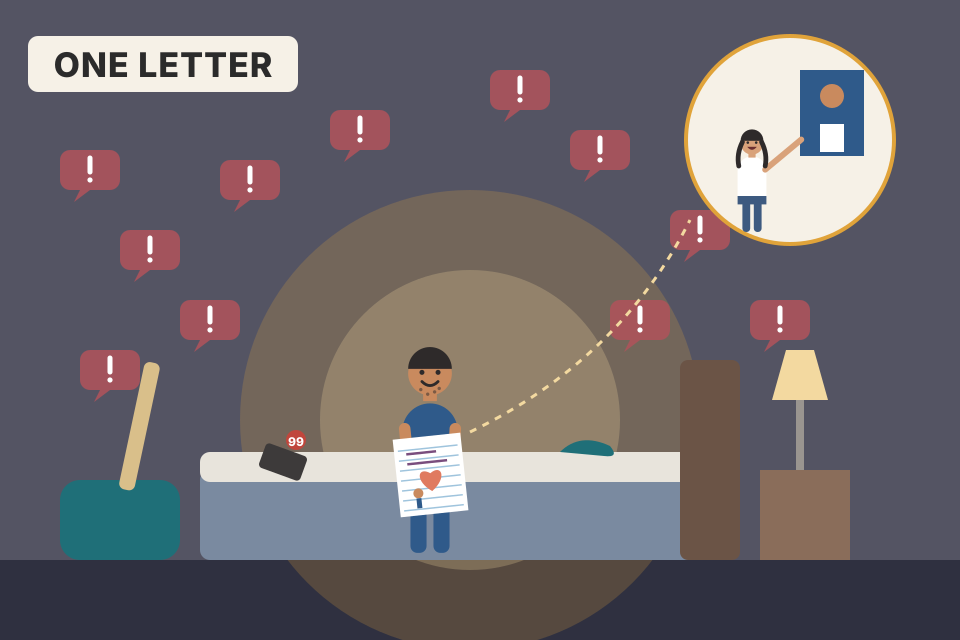
A cricketer who dropped the catch that lost a World Cup match is being trolled by half the country. Among the thousands of abusive messages is one handwritten letter from a twelve-year-old in Indore saying he is still her favourite player and she has his poster on her wall. Years later, in interviews, it is that letter he talks about.
Where it breaks: the boy's admiration happened to be welcome; admiration for a person in disgrace can also look like approval of what they did. Warmth toward a person is not the same as defending their actions.
What's happening behind it
The book's explanation: admiration feeds the desire to feel important (Part One, Ch.2), and it is most powerful when it is rare. When everyone condemns someone, a single sincere admirer stands out enormously.
Beyond the book: persuasion research finds that a message is believed more when the messenger has nothing to gain from it, or is going against the crowd (Elaine Walster, Elliot Aronson and Darcy Abrahams, 1966). A child with nothing to gain, writing against the whole world, is about the most believable admirer there is.
At work
When a colleague's launch has gone badly and the incident channel is full of blame, a private message saying "the rollback you did at midnight was really clean, and I know this week has been rough" lands far harder than any praise on a good day. You are not excusing the outage; you are seeing the person.
09 · WHAT INTEREST LOOKS LIKE
Months of Spanish, a birthday book, and a "hello" that sounds glad
pdf p74–75
Carnegie now turns from stories to habits. If we want friends, he says, we should go out of our way to do things for people, things that cost time, energy, unselfishness and thoughtfulness. He gives three examples.
1. Effort in their language
Before a tour of South America, the Prince of Wales (later Duke of Windsor) spent months learning Spanish so that he could give public speeches in the local language. South Americans loved him for it.
2. Remembering birthdays
For years Carnegie collected his friends' birthdays and sent a letter or telegram on the day. He was often the only person who remembered.
3. Greeting with warmth
Greet people with life and enthusiasm, in person and on the phone. Say "hello" in a voice that shows you are pleased they called.
How the birthday system worked (Carnegie admits he had no faith at all in astrology):
He asked the person whether they thought the date of one's birth had anything to do with character, then asked for their birthday.
He silently repeated the date to himself ("November 24, November 24…") to hold it.
As soon as the person turned away, he wrote down the name and date, and later copied it into a birthday book.
At the start of each year he entered every date in his calendar so it would come up automatically.
On the day, a letter or telegram went out. It was a hit, precisely because almost nobody else remembered.
On the telephone. Many companies, he notes, train their telephone operators to greet every caller in a voice full of interest and enthusiasm, so the caller feels the company cares about them. His suggestion: remember that tomorrow when you pick up the phone.
Dated detail. Telegrams, telephone operators and a paper "birthday book" are history. The modern versions are a calendar reminder, a voice note, and how you sound when you unmute on a call or answer a support chat.
Reflect, then reveal: how much do you really know?
Write the names of three people you work with every week. Next to each, write one thing about them that has nothing to do with work (where they grew up, a hobby, a family event, what they are learning). Be honest about the blanks.
Picture it
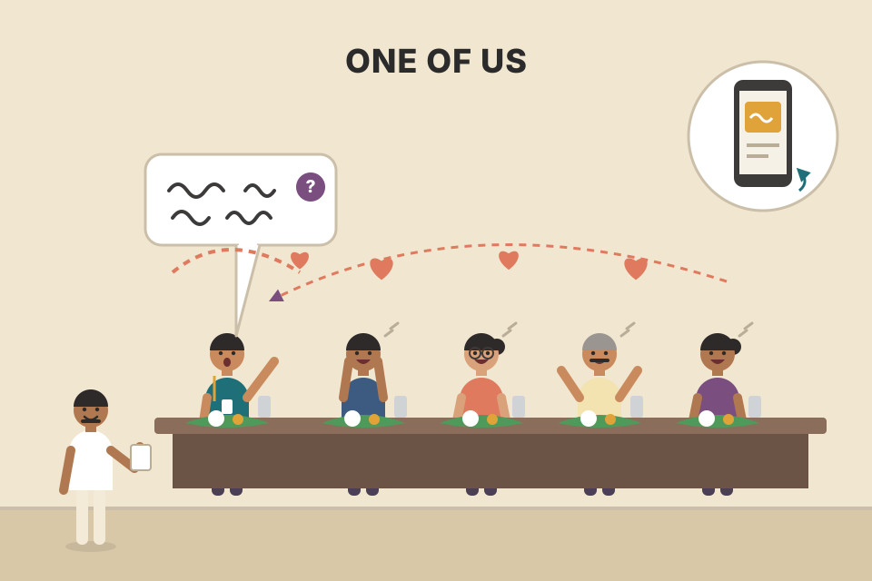
A Bengaluru team lead moves to a new team in Chennai and spends her first weeks learning to say a few sentences of Tamil, badly. At the first team lunch she orders in Tamil and gets the words wrong; the whole table laughs, and from that day the team treats her as one of their own.
Where it breaks: effort is only welcome when it is not a performance. A few words learned to show respect delight people; a "local touch" used once in a presentation and never again feels like a costume.
What's happening behind it
The book's explanation: real interest is measured by what it costs you. Months of Spanish or a year of tracked birthdays cannot be faked cheaply, so people read them as proof that you thought about them. A warm greeting does the same in a second: it tells the caller they are welcome before a word of business is said.
Beyond the book: the birthday trick works partly because of rarity. When everyone gets an automatic reminder on social media, the effortful version (a phone call, a note that mentions something specific about their year) is what stands out now.
At work
Effort: a lead who learns enough about the data-science team's tooling to read their notebooks earns more trust than one who asks them to "just give us an API". Remembering: keep a private note per teammate (their goals from the last 1:1, the conference they wanted to attend, their kid's exam month) and look at it before each 1:1. Greeting: on video calls, the first five seconds set the tone; "Hey, good to see you, how did the move go?" beats "Okay, let's start, we're short on time".
Interview angle. "How do you build trust with a new team?" Give the concrete habits: 1:1s in the first two weeks with open questions about what they enjoy and what frustrates them, notes you revisit, and following up on what they told you.
Connects to
The warm greeting starts with a smile, even on the phone: Part Two, Ch.2.
The bank teller who asked about a customer's mother
pdf p75 · footnote p79
Interest in people does not only win friends; it can build customers' loyalty to a whole company.
Madeline Rosedale, a depositorNational Bank of North America, New Yorkpublished in the bank's magazine, Eagle, 31 March 1978
Her letter, in short. Mrs Rosedale wrote to the bank to praise its staff: polite, helpful, and pleasant to deal with even after a long wait in the queue. Then she explained what really stuck with her. Her mother had been in hospital for five months the year before, and during that time a teller, Marie Petrucello, kept asking with real concern how her mother was getting on.
Carnegie's question: can anyone doubt that Mrs Rosedale will stay with that bank?
The source detail (the bank publication and its date) is in the chapter's only footnote, printed on pdf p79.
Picture it
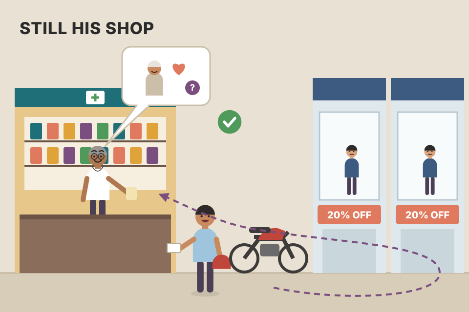
The chemist near your flat in Hyderabad whose owner, when you come in for the third week running for your father's BP tablets, asks, "How is uncle now? Did the new dose suit him?" Several bigger pharmacies open on the same road with discounts. You still go to him.
Where it breaks: loyalty from care has limits. If the chemist runs out of stock every week, kindness alone will not keep you. The interest has to sit on top of a service that works.
What's happening behind it
From the story: the teller's question turned a transaction into a relationship. For the customer, the bank became "the place where Marie asks about my mother", which no competitor's interest rate can copy.
Beyond the book: customer-experience research consistently finds that how customers feel they were treated predicts loyalty better than how efficiently the problem was solved alone. The cost to the bank of that one question was close to zero.
At work
For a platform or internal-tools team, your "customers" are other engineers. Reply to a support ticket with "Fixed. By the way, was this blocking your release? Did it go out okay?" and that team will come to you first next time, defend your roadmap in planning, and forgive the next outage. For client work, the account manager who remembers the client's big launch date and checks in afterwards keeps the contract when the rates are being compared.
11 · FIND WHAT THEY CARE ABOUT
Charles Walters and the stamps for a twelve-year-old boy
pdf p75–76
Charles R. Waltersa large New York banka confidential reportone person had the facts
The problem. Walters had to write a confidential report on a company, and only one person, its president, had the facts he urgently needed.
The clue. As Walters was shown into the president's office, a young woman put her head round the door to say she had no stamps for him that day. The president explained that he collected stamps for his twelve-year-old son.
The first interview. Walters explained his mission and asked his questions. The president was vague and general and clearly did not want to talk. The meeting was short and produced nothing.
The idea. Walters did not know what to do, until he remembered the secretary's remark: stamps, a twelve-year-old son. He also remembered that his bank's foreign department received letters from every continent and kept the stamps.
The second visit. The next afternoon he sent in word that he had some stamps for the boy. This time the president came out beaming, shook his hand warmly, and handled each stamp with delight, saying again and again that his son George would love it. They spent half an hour on stamps and a photo of the boy.
The result. Then, without Walters even asking, the president spent more than an hour giving him every fact he wanted. He called in his subordinates and questioned them, phoned colleagues, and loaded Walters down with figures, reports and letters. Walters said that, as reporters put it, he had a scoop.
Which response? Finding the stamps
Pick a response to see how Carnegie would judge it.
Picture it
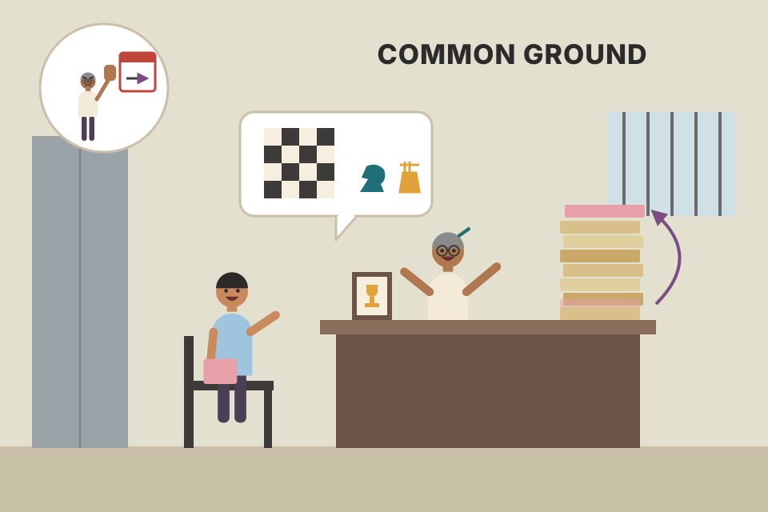
You need a sign-off from a strict section officer in a government office in Delhi, and the first visit gets you nothing but "come next week". You notice a photo of a school chess trophy on his desk. On the next visit you mention your nephew's chess club and ask about it. Twenty minutes later you know everything about his daughter's ratings, and your file has somehow moved to the top of the pile.
Where it breaks: this can slide into bribery-by-charm, and in an office with rules it should not change the outcome, only the warmth. Walters gave stamps the boy would love, not a favour in exchange for an official decision; know where that line is.
What's happening behind it
The book's explanation: Walters's first visit was about what he wanted. The second was about what the president cared about most, his son. Once Walters showed interest in that, the president wanted to help him and gave far more than was asked.
Beyond the book: two forces stack here. One is reciprocity (Robert Cialdini): a gift, especially a thoughtful one, creates a strong urge to give back. The other is that the gift was personal: it proved Walters had noticed something about the man, which a generic present could not.
At work
The product manager who keeps stalling your migration has a "stamp collection": maybe it is the quarterly metric she is judged on, maybe a customer she promised something to. Find it (listen in meetings, read her team's OKRs, ask). "Would it help if the migration also gave you per-tenant latency numbers? I know that's been a pain for the enterprise accounts" turns a blocker into an ally. The first meeting about your needs will often be brief and barren; the second, about theirs, gets the scoop.
Interview angle. "Tell me about a time you influenced someone without authority." The best structure is Walters's: first attempt failed, you learned what they cared about, you connected your goal to theirs, and they ended up giving more than you asked.
Connects to
The whole next idea in one line, "talk in terms of the other person's interests": Part Two, Ch.5.
Arousing an eager want by starting from what they want: Part One, Ch.3.
12 · ASK FOR HELP, NOT A SALE
C. M. Knaphle: ten years of failed pitches, two hours of interest
pdf p76–77
C. M. Knaphle, Jr.Philadelphia fuel selleryears of tryingasked for 1 minute, got 1 h 47 min
The problem. For years Knaphle had tried to sell fuel to a large chain-store company. It kept buying from a dealer outside town, and the trucks drove its fuel right past Knaphle's office door. One evening in Carnegie's class he gave a furious speech calling chain stores a curse on the country, and still wondered why they would not buy from him.
Carnegie's suggestion. Try a different approach. The class staged a debate on whether the spread of chain stores was doing the country more harm than good, and Knaphle, on Carnegie's advice, agreed to take the side defending the chain stores.
The visit. He went straight to an executive of the very company he resented and said he had not come to sell fuel but to ask a favour. He explained the debate, said he could not think of anyone better placed to give him the facts, and that he badly wanted to win.
What happened (Knaphle's account, retold).
He had asked for exactly one minute; the executive sat him down and talked for one hour and forty-seven minutes.
He called in another executive who had written a book on chain stores, and wrote to the National Chain Store Association to get Knaphle a copy of a debate on the topic.
He spoke with real pride about the service chain stores gave to hundreds of communities. Knaphle admits his eyes were opened and his whole attitude changed.
At the door, the executive put an arm round his shoulder, wished him luck in the debate, asked him to come back and tell him how it went, and his last words were that Knaphle should see him again in the spring, as he would like to place an order for fuel.
Knaphle's verdict: almost a miracle. The man offered to buy without being asked. Two hours of real interest in him and his problems did more than ten years of trying to get him interested in Knaphle and his fuel.
Nothing new. Carnegie tells Knaphle he has not discovered anything: about a century before Christ, the Roman poet Publilius Syrus already said it.
"We are interested in others when they are interested in us."Publilius Syrus, as quoted by Carnegie (pdf p77)
Picture it
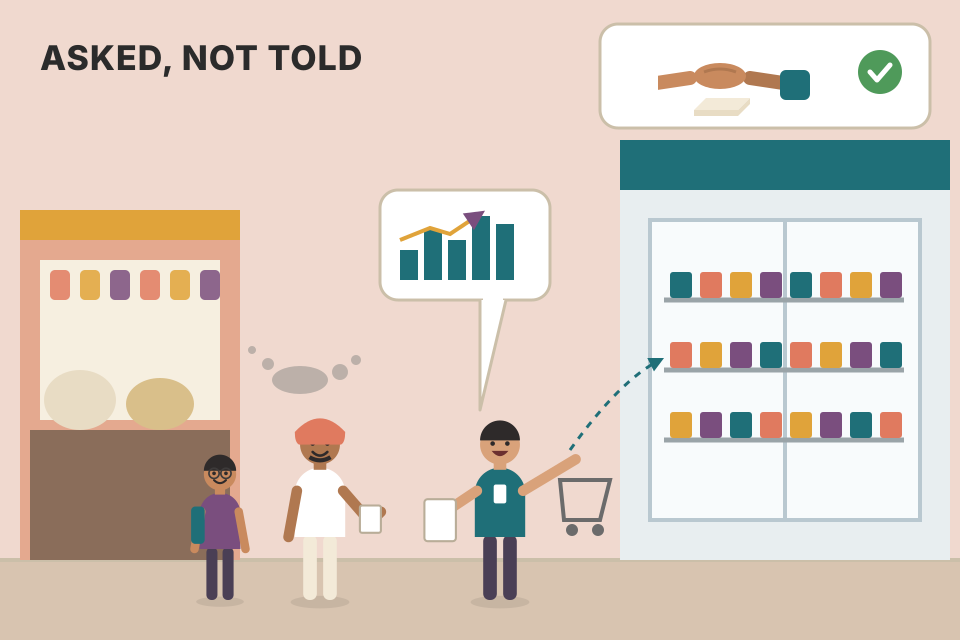
A small kirana owner in Jaipur has resented the new supermarket for a year. His nephew needs a college project on modern retail, so the owner swallows his pride and asks the supermarket manager to explain how they manage stock. The manager, delighted to be asked, spends the afternoon walking him through it, and at the end says he is short of a local supplier for fresh paneer, would the owner be interested?
Where it breaks: Knaphle's request was real (he did have a debate), and he genuinely changed his mind. Invent a fake project to get in the door and you are back to manipulation, and the other side may well find out.
What's happening behind it
The book's explanation: asking the executive to share what he knew put him in the role of expert and showed interest in the thing he was proud of. As Publilius Syrus put it, interest flows back to the person who shows it first. Notice that Knaphle also changed: he had to argue the other side, so his contempt for chain stores, which had surely shown in every pitch, was replaced by understanding.
Beyond the book: the move resembles the Benjamin Franklin effect: Franklin wrote in his Autobiography that he won over a hostile fellow legislator by asking to borrow a rare book. People tend to like those they have helped, perhaps because helping makes them see the other person as someone worth helping.
At work
Your team keeps pitching the platform team on adopting your new deployment tool, and they keep saying no. Stop pitching. Go to their lead and ask how they think about deployments, what failed with the last tool, what they would want if they were designing it. You will learn why they said no, you may change your own design, and the "order" (adoption) often follows unasked. The same goes for the database team you privately call "blockers": defending their position for an hour, honestly, is the fastest way to stop seeing them as enemies.
Interview angle. "Tell me about a time you won over a sceptical stakeholder." Show the turn: you stopped pushing your solution, asked about their problems and expertise, learned something that changed your plan, and support followed.
Worked example: getting the security team to approve a new library
Your PR adding a new HTTP client library has sat in the security team's review queue for three weeks.
Interest in me and my product
"Bumping this again. This library is faster and better maintained than what we use. It's blocking our sprint. Can someone please approve?"
Third bump, same answer: silence, or a list of objections.
Interest in them and their problems
"Could I get 15 minutes with whoever owns third-party library reviews? I'd like to understand what you check for, so I can bring you better-prepared requests in future. Happy to start with this one as the example."
You learn their checklist (licences, CVE history, transitive dependencies), fix what was missing, and the next requests go through in days.
Seeing things from the other person's point of view: Part Three, Ch.8.
13 · THE CONDITION AND THE PRINCIPLE
It must be sincere: the student nurse on Thanksgiving, and Principle 1
pdf p77–78
The condition. After all those deals and favours, Carnegie adds the line that keeps the chapter from being a sales manual. Showing interest, like every principle of human relations, must be sincere. It has to pay off for the person receiving the attention, not only for the person giving it. It is a two-way street: both sides benefit.
Martin Ginsberg, a student in Long Islandaged 10a city hospital welfare wardThanksgiving Day
The situation. On Thanksgiving Day, ten-year-old Ginsberg lay in the charity ward of a city hospital, facing major orthopaedic surgery the next morning and months of painful recovery. His father was dead, he and his mother lived on welfare, and she could not come to see him that day. Alone, frightened, and worried about her spending the holiday with no company and no money for a meal, he ended up quietly sobbing.
The nurse. A young student nurse noticed and came over to comfort him. Saying she was missing her own family that day, she suggested they keep each other company over dinner, and fetched two holiday trays (turkey, mashed potatoes, cranberry sauce and ice cream). Her shift ended at 4 p.m.; she stayed, unpaid, until nearly 11, talking, playing games and calming him until he slept.
Afterwards. Decades later, Ginsberg said he had never had a Thanksgiving without remembering that one, and the stranger whose kindness got him through it.
Why this story ends the chapter. It is the opposite of the deals in plates 11 and 12. The nurse wanted nothing; there was no order, no scoop. She even offered her own loneliness, so the boy was helping her too, which is the two-way street in its simplest form. Carnegie closes: if you want people to like you, if you want real friendships, and if you want to help others while you help yourself, remember this.
Principle 1 of Part Two
Become genuinely interested in other people.
Self-audit: this week, did I…
Picture it
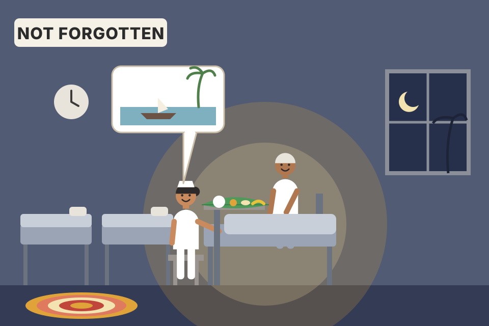
A night-shift nurse in a government hospital in Thiruvananthapuram during Onam, when every ward is half-empty and the patients who are left feel forgotten. She sits with an old man whose family could not come, shares her own packed sadya with him on a banana leaf, and tells him about her village. He talks about that Onam for the rest of his life.
Where it breaks: real care like this can cost the carer a lot; she gave seven unpaid hours on a holiday. Sincere interest does not mean having no limits, and in jobs like nursing, constant giving without support leads to burnout.
What's happening behind it
The book's explanation: sincerity is the condition for everything in the chapter. Interest that serves only you is a tactic, and people detect tactics. Interest that also helps the other person is felt and remembered for decades, as Ginsberg remembered the nurse.
Beyond the book: research by Karen Huang and colleagues at Harvard (2017) found that people who asked more questions in conversations, especially follow-up questions about what the other person had just said, were liked more. Follow-up questions are hard to fake: they require actually listening. That is close to a measurable test of "genuine".
At work
Teammates can tell the difference between a lead who asks "how are you?" as a meeting opener and one who remembers the answer next week. If your interest in a junior engineer shows up only before performance reviews, or only when you need weekend cover, it is a one-way street and they know it. The two-way version: you learn what they want to grow into and actually give them that kind of work, even when it is slower for you.
Interview angle. "Tell me about a time you helped someone on your team." A strong answer shows interest that cost you something and helped them, with no payoff for you in the story: the mentoring session you ran unasked, the visa paperwork you helped a new hire through. It is the nurse's story, not Knaphle's.
Worked example: the Monday 1:1 opener
Interest as a ritual
"Hey, how was your weekend? Good, good. Okay, so, the sprint board…"
The question is asked and the answer is ignored. It is a social tic, not interest.
Genuine interest
"Last time you said your dad's knee surgery was this weekend. How did it go? … Glad to hear it. Do you need any flexibility this week while he recovers?"
It remembers (birthday book), follows up (a follow-up question), and gives something back (flexibility): the two-way street.
Connects to
Real listening, the main way to show interest: Part Two, Ch.4.
Sincerity versus flattery, the line Carnegie draws first: Part One, Ch.2, and again at the end of Part Two in Ch.6.
14 · WRAP-UP
Summary and key terms
pdf p68–79
The model is a dog. Tippy won everyone over with pure, motive-free interest. You make more friends in two months by being interested in others than in two years of trying to get them interested in you.
Impressing fails because people are interested in themselves. "I" was the most used word in 500 phone calls (3,900 times); you look for yourself first in a group photo. Napoleon ended with almost no one to rely on; Adler said the person uninterested in others has the hardest life and causes the most harm.
It shows in your work. An editor could tell from a few paragraphs whether an author liked people. Thurston, a former hobo, out-earned better-schooled magicians with rehearsed showmanship plus genuine gratitude: "I love my audience."
Anyone can do it. George Dyke, a retired service-station owner and a mediocre fiddler, built a new life and a following as "Uncle George" purely through curiosity about other musicians.
Notice the "unimportant". Theodore Roosevelt phoned his valet's wife about a bobwhite and greeted White House maids by name; the head usher called it the only happy day in two years. Sykes's habit of greeting a soda clerk turned a lost account into a double order.
Even the busiest and the most hated respond. Famous authors came to Brooklyn for a letter of admiration with questions about themselves; the same method brought cabinet members, Bryan and FDR. A boy's admiring letter moved the despised Kaiser.
Interest takes effort and warmth: months of Spanish, a birthday book, an enthusiastic "hello" on the phone. A teller's questions about a customer's sick mother won lifelong loyalty.
Find what they care about. Walters got his facts by bringing stamps for a president's son; Knaphle got an unasked-for order by asking a chain-store executive for help rather than pitching. Publilius Syrus: we are interested in those who are interested in us.
It must be sincere and two-way, like the student nurse who stayed seven extra hours with a frightened boy on Thanksgiving. Principle 1 of Part Two: Become genuinely interested in other people.
Term or phrase
Meaning on this page
Where
Principle 1 (Part Two)
Become genuinely interested in other people.
pdf p78
Two months vs two years
Interest in others wins friends far faster than trying to get them interested in you.
pdf p68–69
Wigwag
Old slang for flag-signalling; here, waving for attention to make people notice you.
pdf p69
"I", 3,900 times
The phone-company count in 500 calls: people mostly talk about themselves.
pdf p69
Adler's warning
Those uninterested in others have the greatest difficulties and do the most harm.
pdf p69
"I love my audience"
Thurston's pre-show reminder: gratitude toward the people you serve.
pdf p71
The soda clerk
A person with no formal power whose good word decided the sale.
pdf p72–73
The Brooklyn letter
Admiration + questions about the person + respect for their time.
pdf p73
Birthday book
Carnegie's system for remembering friends' birthdays.
pdf p74
The stamps / a scoop
Finding what someone cares about; the flood of information that followed.
pdf p75–76
Asking a favour
Knaphle's move: ask for their expertise instead of selling.
pdf p76–77
Publilius Syrus
Roman poet: we are interested in others when they are interested in us.
pdf p77
Two-way street
Sincere interest must benefit the receiver as well as the giver.
pdf p77
15 · USE IT
Practice this week
beyond the book
Small exercises, each with a way to tell whether it worked. The exercises are ours; the ideas are the chapter's.
The pronoun check. Before sending your next long message, update or cover note, run it through the "I" counter (plate 2) or just count by eye. Rewrite two "I" sentences as "you/your team" sentences. Worked if: the reply engages with your point instead of just acknowledging it.
Greet three soda clerks. Learn the names of three people outside your team you see often (support, QA, facilities, the security guard) and greet them by name all week. Worked if: by Friday, at least one of them starts the conversation with you.
One follow-up a day. Each day, ask one follow-up question about something a person told you ("You said the release was risky; how did it go?"). Worked if: conversations get longer and people tell you things you did not know.
Find one stamp collection. Pick a stakeholder who has been slow or cold. Find out one thing they care about (their goal, a project they are proud of) and open your next conversation with it. Worked if: the meeting runs longer than planned, Walters-style.
Ask a favour, not a sale. Next time you need buy-in, ask the sceptic to teach you how they think about the problem before you present. Worked if: you change something in your plan because of what they said.
The birthday book. Start a private note with one personal detail per teammate and any dates that matter to them. Put the dates in your calendar. Worked if: within a month you follow up on something you would otherwise have forgotten.
16 · LIMITS
Where it can go wrong
pdf p74–78 · plus beyond the book
The book's own caveats first.
It must be sincere. Carnegie says this explicitly (pdf p77): a show of interest has to be real and has to pay off for the person receiving it, not only for you. It is a two-way street.
It costs something. He says friendship needs things that take time, energy, unselfishness and thoughtfulness (pdf p74). A quick technique will not substitute.
Interest is not the whole recipe. Thurston had a second edge, rehearsed showmanship; Dyke still had to show up at competitions for years. Interest multiplies other effort; it does not replace it.
He offers Thurston's mantra without endorsing it. He calls it something you may find absurd and passes it on "without comment". Take it as one person's recipe, not a law.
Beyond the book: our critique
Many of the stories end in a sale. Sykes's double order, Walters's scoop, Knaphle's fuel order. Read quickly, the chapter can sound like "fake interest pays". Carnegie's own fix is the two-way-street rule and the nurse story; hold yourself to it. If you would stop being interested the moment the deal closed, it was a tactic.
The birthday trick has a pretext. Carnegie asked about astrology, which he did not believe in, to get the date. It is harmless, but notice the tension with "genuine". Today you could simply ask, or check the team calendar, and be honest about why.
Interest can be intrusive. Asking about family, health or religion is warm in some settings and invasive in others, especially from a manager. In many Indian offices, seniors asking about marriage plans or salaries is common and often unwelcome. Follow the other person's lead: ask open questions and let them choose how much to share.
Collecting facts is not caring. A CRM full of colleagues' kids' names, used to seem warm, is surveillance with a smile. The test is follow-through: does your interest ever change what you do for them?
Introverts and energy. Constant outward interest is tiring for some people. Depth matters more than breadth: real interest in a few people beats performed interest in everyone.
Some stories are dated or tidied. The Kaiser's marriage is compressed into a punchline; the phone-company study cannot easily be checked. The stories illustrate a point that later research supports (question-asking and reciprocal liking), but they are anecdotes, not evidence.
17 · TEST YOURSELF
Check yourself
pdf p68–78
Try to answer before opening each one. The first half is story recall; the second half is using the principle.
1. Why does Carnegie open Part Two with a dog, and what claim does he repeat twice?
A dog wins friends with pure interest and no ulterior motive (it is not selling anything). His repeated claim: you make more friends in two months by being interested in others than in two years of trying to get others interested in you.
2. What did the New York Telephone Company study find, and what is the "group photograph" test?
The most used word in 500 phone calls was "I", 3,900 times. The photo test: in a group picture that includes you, you look for yourself first. Both show that people are mostly interested in themselves.
3. What did Alfred Adler say, and why does Carnegie print it twice?
That the person who is not interested in other people has the greatest difficulties in life and does the most harm to others, and that human failures come from such people. Carnegie thinks it is one of the most significant statements in psychology, so he repeats it in italics.
4. What were Howard Thurston's two advantages over other magicians?
Showmanship (every gesture and tone rehearsed and timed) and a genuine interest in people: where others saw the audience as fools to trick, he felt grateful to them and told himself "I love my audience" before every show. Not schooling (he was a runaway hobo) or superior knowledge of magic.
5. Who was "Uncle George, the Fiddle Scraper", and what is his story's point?
George Dyke, forced to retire when a highway was built over his service station, took up the fiddle and became interested in every musician he met. Though not a great player, he made many friends and a new, happy life at 72. Interest works even without talent or status.
6. Give two examples of Theodore Roosevelt's interest in "unimportant" people.
He phoned his valet's wife to tell her a bobwhite was outside her window, and called out greetings to the couple by name when passing their cottage. Visiting the White House while the Tafts were away, he greeted staff down to the scullery maids by name and ate Alice's corn bread; the head usher said it was their only happy day in nearly two years.
7. Why did the drugstore owner give Edward Sykes double his usual order?
After throwing Sykes out, the owner heard from the soda-fountain clerk that Sykes was one of the few salespeople who ever greeted the staff, and that he deserved the business. Sykes's long habit of noticing the clerks decided the sale.
8. How did Carnegie get busy authors to come to Brooklyn?
Letters signed by about 150 students said they admired the authors' work and wanted their advice, acknowledged they were too busy to prepare a lecture, and enclosed questions about the authors themselves and their methods. The same method brought Shaw, Wickersham, Bryan and FDR.
9. What did Charles Walters do differently on his second visit, and what happened?
He brought foreign stamps for the president's twelve-year-old son, whom he had heard about from the secretary. After half an hour on stamps, the president gave him over an hour of facts, called in staff and colleagues, and loaded him with reports, all unasked.
10. What two things did Knaphle change, and what was the result?
He stopped pitching and asked the chain-store executive for help with a debate, and he took the side defending chain stores (so his own contempt turned into understanding). He asked for one minute, got one hour and forty-seven minutes, and was offered an order unasked.
11. What is the "two-way street", and how does the nurse story show it?
Sincere interest has to benefit the receiver, not only the giver. The student nurse gained nothing material; she stayed seven unpaid hours with a frightened, lonely ten-year-old, even sharing her own loneliness. He remembered her every Thanksgiving of his life.
12. Application: a new teammate barely speaks in stand-ups. How would you apply this chapter in your first two weeks?
One-to-one, ask open questions about what they worked on before, what they enjoy and what they find confusing here; follow up on the answers; learn enough about their past stack to ask good questions; greet them warmly. Do not try to impress them with your own knowledge of the codebase.
13. Application: a stakeholder keeps rejecting your proposal. What is the Walters/Knaphle approach?
Stop repeating your pitch. Find what they care about (their goals, a project they are proud of) and ask for their expertise. Connect your proposal to their interests, and be ready to change it based on what you learn.
14. Interview: the interviewer asks, "Any questions for us?" How does this chapter shape your answer?
Ask about the interviewer's own work and problems, ideally following up on something they said earlier in the interview. Genuine, specific curiosity about them is memorable; generic questions about "culture" are the "wigwag".
15. Where is the line between genuine interest and manipulation?
Carnegie's test: interest must be sincere and pay off for the other person too. If you would stop caring the moment you got what you wanted, or you are faking a shared interest, it is manipulation. If your interest leads you to do things for them that help them, it is genuine.
18 · SOURCES
References
pdf p67–79
Book pages and other sources used on this page
Dale Carnegie, How to Win Friends and Influence People, revised edition (1981; Simon & Schuster 2009 printing), Part Two, Chapter 1, "Do This and You'll Be Welcome Anywhere", pdf p68–79 (Part Two title page pdf p67). Stories by page: Tippy p68–69; the phone study, Napoleon, Adler p69; the magazine editor and Thurston p70–71; George Dyke p71; Theodore Roosevelt p71–72; Sykes p72–73; the Brooklyn authors p73; the Kaiser, the Prince of Wales, birthdays p74; telephone greetings p74–75; Rosedale p75 (source footnote p79); Walters p75–76; Knaphle p76–77; Publilius Syrus and sincerity p77; Ginsberg p77–78; Principle 1 p78.
Sources Carnegie draws on (retold here, not reproduced): James E. Amos, Theodore Roosevelt, Hero to His Valet; Archie Butt's account of Roosevelt's White House visit; Alfred Adler, What Life Should Mean to You (1931); Eagle, National Bank of North America, 31 March 1978.
Beyond the book (named where used): D. Tamir and J. Mitchell, "Disclosing information about the self is intrinsically rewarding" (2012); J. Pennebaker, The Secret Life of Pronouns (2011); A. W. Brooks, "Get excited: reappraising pre-performance anxiety as excitement" (2014); the Harvard Study of Adult Development; M. Granovetter, "The strength of weak ties" (1973); A. W. Brooks, F. Gino, M. Schweitzer, "Smart people ask for (my) advice" (2015); E. Walster, E. Aronson, D. Abrahams on communicators arguing against their own interest (1966); R. Cialdini, Influence (reciprocity); B. Franklin, Autobiography (the borrowed book); K. Huang et al., "It doesn't hurt to ask: question-asking increases liking" (2017).
Historical note (Beyond the book): Wilhelm II's 1922 marriage to Princess Hermine Reuss at Doorn.